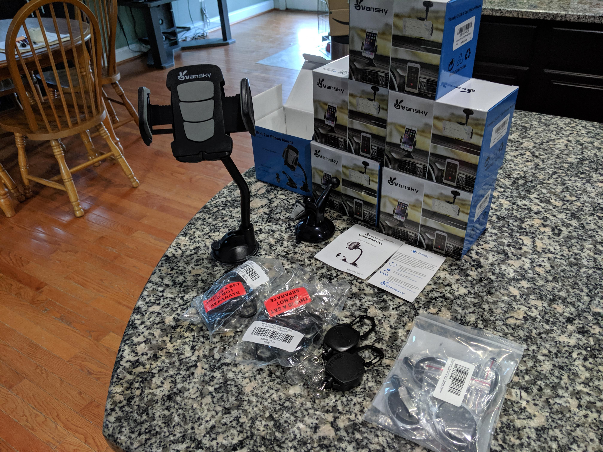
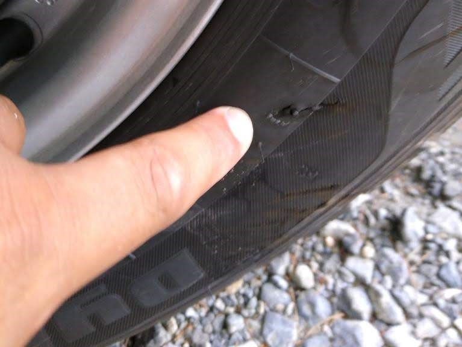

Driver training today
I woke up at 5:50 AM so I could make it to Walmart to buy some things our drivers requested before getting to the warehouse for my 8:00 AM driver training class. I missed my exit, which then meant I didn't really have time to reroute and make it to Walmart before class. I decided to go straight to the warehouse, making me 30 minutes early for class. However, one of the instructors got caught in traffic because there was a really bad accident on the highway. That instructor had the only laptop with the powerpoint presentation we need for training. We didn't end up starting until 9:15.
But I didn't waste my whole morning! I read through and responded to some emails. Once I got through all the short emails that I could handle on the phone, I decided to browse Amazon for the things I wanted to get from Walmart. I was really just looking at what options were available, but then I saw I could get free same-day shipping if I ordered in the morning! So what did I do? I ordered a bunch of crap! I got two varieties of retractable lanyards for our van keys and phone mounts for the vans as well. I bet our packages got delivered to our warehouse and sent out with some Flex driver late in the day. I ended up getting the packages around 7PM. Crazy!
Anyway, back to the class. I learned a lot of interesting things today. I was definitely a different feeling for me being in a class where I actually want to learn the information — because I will need to know all this stuff when our drivers have questions for me. Granted, they will all go through the same training. But they may not pay the same amount of attention. But everyone seemed pretty engaged in the class and we all had fun with it. The class started off with an hour of dog attack horror stories. During my first break of the day, my mom told me we had a driver get attacked by a dog. They did exactly what I had just learned in class and were able to stay safe. However, the dog chewed up the tire and punctured a hole. The tired slowly deflated throughout the day and now we need to get the tire replaced tomorrow.
Amazon preaches safety for its drivers. The instructors really made it seem like they mean it too. In the end, the DSP owners are the ones who will be making the judgment calls on when to reprimand drivers for missing deliveries due to supposed safety concerns. Though the safety instructors did say that Amazon can choose to basically fire a DSP owner for unsafe practices as well. So really there are two layers of protection for these drivers. I know my parents and I take driver safety seriously, and the other DSP owners I have met seem nice. I am sure everyone will be looking out for their drivers.
On to the studies. Drivers use a device we call a "rabbit" to assist them with deliveries. It's really just any phone with an Amazon Flex app. But it's what shows the drivers their routes and allows them to scan packages when they pick them up from the warehouse and drop them off at the customers' doors. The rabbit also has an app that monitors driving patterns to make sure the driver is operating the vehicle safely. The driver gets a score at the end of the day. It's basically like a credit score, but for driving. We were also told to assume we are always on camera — with all the smart home security systems now — and behave accordingly. We were taught how to stay safe when we see a dog, when customers act aggressively toward us, and when we suspect someone is following us to rob us. We were also given a bunch of stats to show how simple things — making left turns, driving fatigued, speeding, etc. — can increase odds of injury drastically. All "obvious" things. But it's a little different now that this is my job. And my team's job. We will be responsible for 6,000 man-hours of driving per month soon enough. There is a lot that can go wrong in 6,000 hours on the road. And we need to know the proper way to respond to anything and everything, all while trying to get our drivers back to delivering 200+ packages per day. I'm sure it will be a nightmare at times. But somebody has to do it.